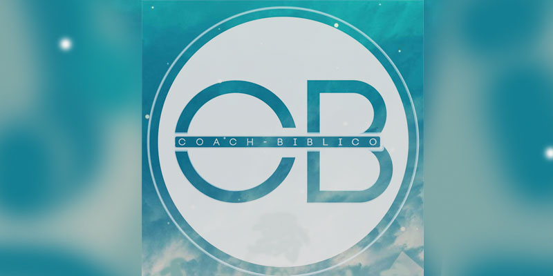

"Que el Señor los lleve a amar como Dios amó, y a perseverar como Cristo perseveró"
2 Tesalonicenses 3:5
"Pues aunque vivimos en el mundo no libramos batallas como lo hace el mundo"
2 Corintios 10:3

Coach Bíblico
No es fácil ser un buen líder, pero tampoco es imposible. Jesús nos mostro el camino a seguir, si queremos influenciar positivamente y llevar frutos es nuestro deber guiar y preparar a otras personas para seguirlo.
Leer MásNuestro Objetivo. Ser un Ministerio reconocido que proyecte el mensaje de Salvación y los Principios Bíblicos a las generaciones del mundo, con actividades y estrategias juveniles continuas, para desarrollar la lectura y aprendizaje de las Sagradas Escrituras.